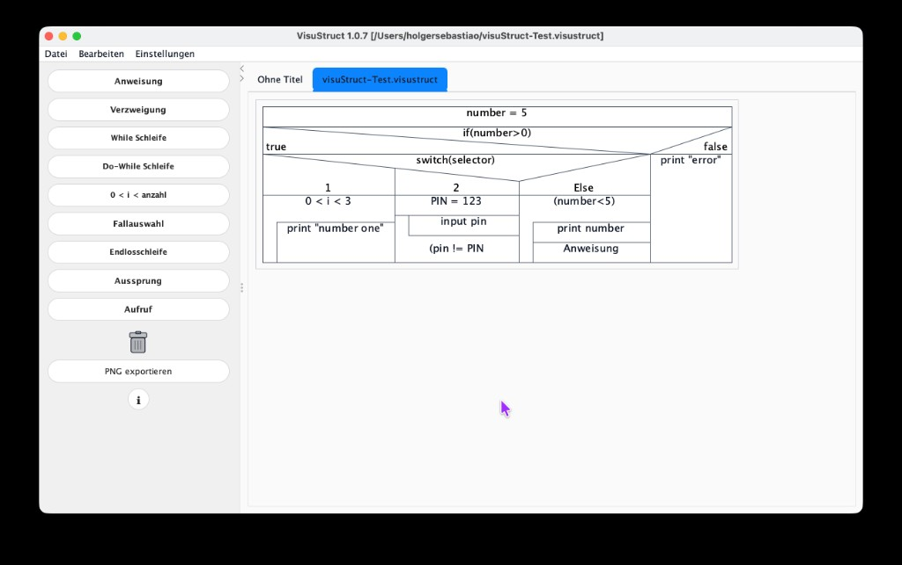
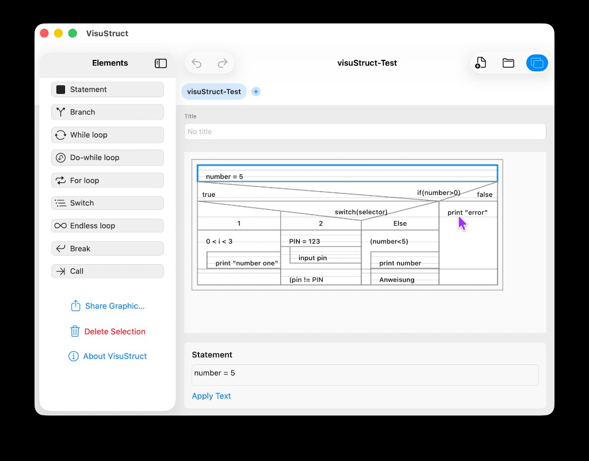

Aplicação Java (computador)
Código aberto (MIT). Windows, macOS, Linux.
Crie e edite estrutogramas — os diagramas de Nassi-Shneiderman (também diagramas de Chapin): estrutura e fluxo antes da sintaxe.
A app Java em código aberto para secretária e a app SwiftUI para iPad e Mac com Apple silicon partilham o formato .visustruct. Arrastar e largar, interface clara, três idiomas: inglês, alemão e português.
Java em secretária: paleta, diagrama em separadores, exportação. Requer Java.

O editor de estrutogramas para o seu iPad e o seu Mac.

Pense primeiro na lógica e no fluxo — no algoritmo. Depois traduza a mesma estrutura com a sintaxe, na linguagem de programação que preferir — passo a passo e de forma clara.
Código aberto (MIT). Windows, macOS, Linux.
SwiftUI · iPad e Mac com Apple silicon · separadores, partilha, impressão · 1.1 (App Store).
O VisuStruct não recolhe dados pessoais e, pela forma como funciona, é compatível com o RGPD. Os seus estrutogramas e ficheiros .visustruct permanecem no dispositivo da utilizadora ou do utilizador. Não há extração, armazenamento central nem rastreio dos conteúdos pedagógicos pelo VisuStruct. O tratamento faz-se onde deve — localmente junto de quem aprende. Na escola isto significa, em geral, menos incerteza do que com muitos serviços em nuvem, porque o conteúdo dos diagramas não é enviado ao editor da app.
Outros projetos — sobretudo com foco em ensino e educação — estão no meu site www.sebastiao.org (por agora sobretudo em alemão).